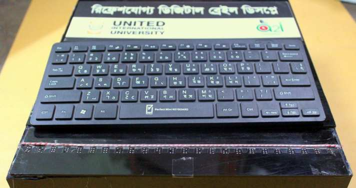
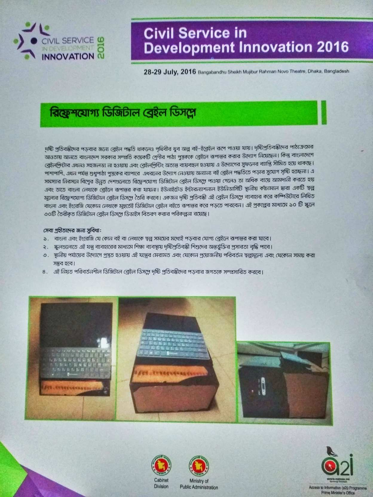
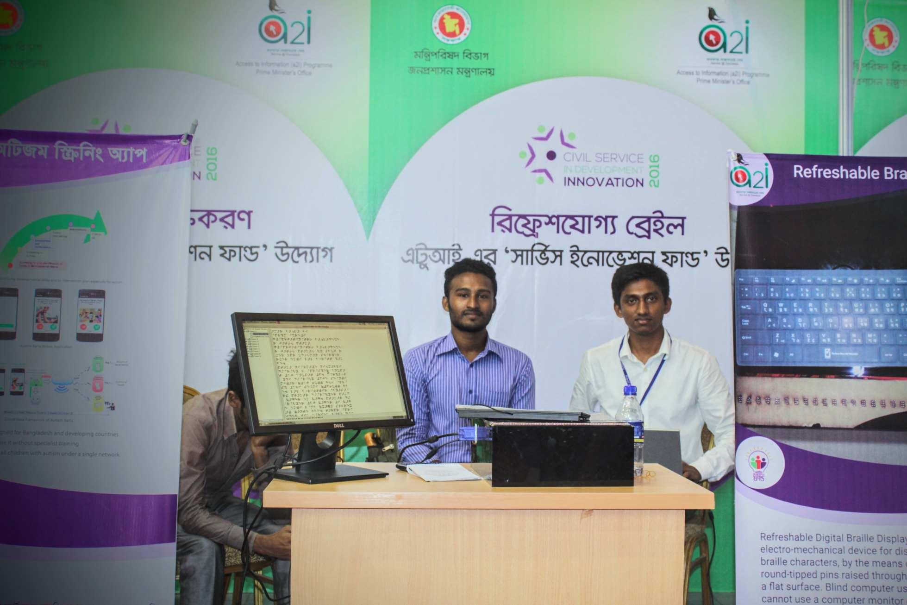

ABOUT THE PROJECT
Braille is a tactile writing system used by people who are visually impaired. It is traditionally written with embossed paper. Nowadays Braille users can read computer screens and other electronic supports with refreshable braille displays. Over the world there are some models of braille displays available, but they cost huge and don't support our native Bangla language. To overcome this, one of my honorable teachers, Arif Reza Anwary (Asst. Professor, UIU), as well as inspired by PROF. DR. MD. FAYYAZ KHAN (Pro Vice Chancellor, Green University of Bangladesh), motivated me to make a braille display which will be low cost and navigated through voice output narration. It also supports audio books.
Refreshable Braille Display is a device used by visually impaired people. Designed with Raspberry Pi 2 support, voice synthesizer, multimedia books, and easy braille games for children.
Note: This device can convert English or Bengali text files into Braille symbols.
MADE FOR
Bringing accessible technology and education to visually impaired individuals.

